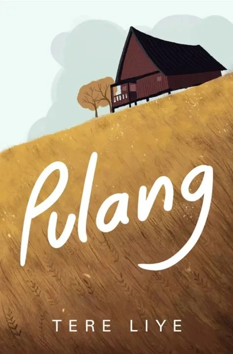
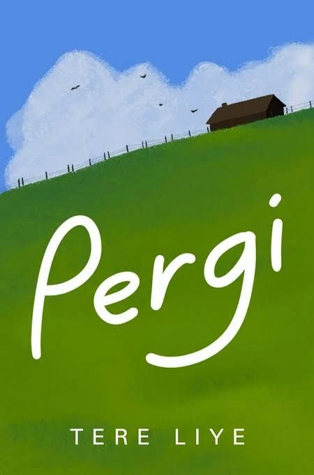

Tentang MyLibrary
MyLibrary adalah salah satu web Browser yang berisikan koleksi buku yang dimiliki oleh seorang mahasiswi bernama Nurrahmatia, yang sekarang sedang menempuh pendidikan di perguruan tinggi swasta yang ada di Yogyakarta. Nama MyLibrary itu sendiri berarti 'perpustakaanku' yang terinspirasi oleh jumlah koleksi buku yang dimiliki.
Happy Reading All
Cari Buku
Koleksi Buku
| Judul | Penulis | Jumlah Halaman | Genre | Tahun Terbit |
|---|---|---|---|---|
| Laut Bercerita | Leila S. Chudori | 379 halaman | Fiksi Histori | 2017 |
| Pulang | Tere Liye | 400 halaman | Fiksi Aksi | 2015 |
| Pergi | Tere Liye | 459 halaman | Petualangan | 2018 |

Laut Bercerita
Laut Bercerita adalah novel fiksi sejarah karya Leila S. Chudori yang diterbitkan pertama kali pada Oktober 2017 oleh Kepustakaan Populer Gramedia (KPG), serta telah diadaptasi menjadi film pendek berdurasi 30 menit pada tahun 2017 dan diterjemahkan ke dalam bahasa Inggris dengan judul The Sea Speaks His Name (2020). Buku Laut Bercerita ini menceritakan tentang sudut pandang seorang Biru Laut. Ia adalah seorang mahasiswa program studi Sastra Inggris di Universitas Gadjah Mada, Yogyakarta. Laut memiliki ketertarikan terhadap dunia sastra dan tulisan karena turun dari ayahnya yang merupakan seorang wartawan Harian Solo. Laut memiliki banyak koleksi buku sastra klasik, baik dalam bahasa Indonesia maupun bahasa Inggris. Saat itu, beberapa buku sempat dilarang peredarannya oleh pemerintah karena dianggap membahayakan, termasuk buku-buku karya penulis Pramoedya Ananta Toer. Buku Laut Bercerita ini mengajak pembaca untuk merenungkan masa lalu yang penuh dengan kepahitan dan kekejaman. Selain itu, terdapat pesan yang menggambarkan semangat perjuangan dan kebebasan yang diusung oleh para aktivis muda.
Pulang
Buku Novel Pulang karya Tere Liye diterbitkan pada tahun 2015 oleh penerbit Jakarta Republika dengan 400 halaman. Novel Pulang ini menceritakan tentang petualangan hidup remaja berusia 15 tahun yang mengalami kesulitan di hutan Rimba Sumatra, remaja tersebut memiliki kemampuan hebat dalam berburu babi hutan. Hal itu membuat Teuku Muda terkesan, Bapak tua itu kemudian membawanya ke kota untuk diasuh layaknya anak angkat. Tokoh utama dalam sinopsis novel Pulang bernama Bujang. Cerita dalam novel ini dibawakan dengan alur menarik dan kompleks. Melalui tokoh utama dan karakter lain, novel Pulang memuat pesan moral yang dekat dengan kehidupan sehari-hari. Novel Pulang juga cocok dijadikan sebagai bahan untuk membuat resensi.